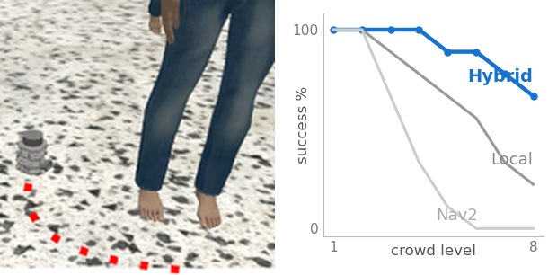

Hybrid LLM Navigation System for Edge-Cloud Reasoning
JKICS, 2026
An edge LLM handles most scenes, and a router calls a cloud LLM only when a scene requires semantic judgment. The hybrid system keeps reaching its goal in crowded scenes where standard Nav2 fails.